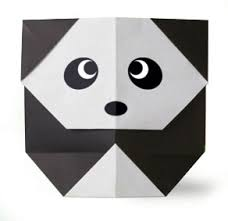

ORIGAMI DESIGNS

Intersting Facts about Pandas
- Giant pandas are good at climbing trees and can also swim.
- Pandas go from pink to white and black (or brown).
- An adult can eat 12 to 38 kilos of bamboo per day!
- Pandas have carnivorous teeth, but they eat bamboo and fruit.
- Prehistoric pandas lived up to 2 million years ago.

Intersting Facts about Chameleons
- Chameleons have eyes in the backs of their heads
- Chameleons come in a lot of different shapes and sizes
- Chameleons have extremely powerful tongues
- Most chameleons eat on things you would not want to find on your dinner plate
- Chameleons take a while to hatch, and do not live very long

Intersting Facts about Camels
- There are two types of camels: One humped or “dromedary” camels and two humped Bactrian camels.
- Camels have three sets of eyelids and two rows of eyelashes to keep sand out of their eyes.
- Camels have thick lips which let them forage for thorny plants other animals can’t eat.
- Thanks to thick pads of skin on their chest and knees, camels can comfortably sit in very hot sand.
- When a camel finally does find water, he can drink up to 40 gallons in one go.

Intersting Facts about Pigeons
- Pigeons are incredibly complex and intelligent animals.
- Pigeons are renowned for their outstanding navigational abilities.
- Pigeons are highly sociable animals.
- Pigeons have excellent hearing abilities.
- Pigeons and humans have lived in close proximity for thousands of years.

Intersting Facts about Flying Cicadas
- Cicadas make noise like toy frogs
- They are underground builders
- They are super sneaky
- Their enemies are the stuff of nightmares
- Some cicadas are really tiny